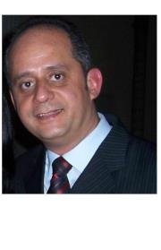
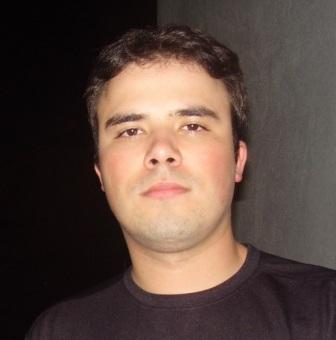

Equipe
Estrutura organizacional do grupo VISAO, com coordenação, pesquisadores, alunos e parceiros institucionais.
Voltar ao InícioCoordenador
Prof. Dr. Júlio Cesar Serafim Casini
Líder do grupo de pesquisa VISAO
Graduado em Tecnologia de Materiais e Engenharia Elétrica, mestre e doutor em materiais para energia (com estágio na University of Wollongong), com pós-doutorado no IPEN e atuação em materiais e dispositivos elétricos aplicados à energia.
Pesquisadores

Aguinaldo Cardozo da Costa Filho
Engenharia Elétrica, Mecânica Espacial e Controle
Doutor em Engenharia e Tecnologia Espaciais pelo INPE, com atuação em controle de processos, retroalimentação e eletrônica.
Anderson Kenji Hirata
Controle, automação, robótica e materiais
Mestre pelo ITA, com interesse em automação industrial, sistemas de controle, robótica, embarcados e caracterização de materiais.
Clécio Fischer
Engenharia aeroespacial e mecatrônica
Doutor em Engenharia Aeronáutica e Mecânica pelo ITA, com experiência em sistemas aeroespaciais, mecatrônica e instrumentação.

Ivan Lucas Arantes
Automação, embarcados e docência
Graduado em Engenharia Elétrica e mestre em Automação, com atuação em sistemas de automação, sistemas embarcados e ensino.
Marcus Vinicius de Siqueira Silva
Circuitos eletrônicos e formação técnica
Doutor em ciências, com experiência no desenvolvimento de circuitos eletrônicos e atuação nos cursos técnicos e de engenharia.
Matheus Mascarenhas
Geofísica espacial e controle e automação
Doutor em Geofísica Espacial pelo INPE, com atuação em instabilidades de plasma, irregularidades ionosféricas e ensino em controle e automação.
Parceiros e Colaboradores
Instituto Federal de São Paulo (IFSP) - Campus São José dos Campos
Instituição de ensino e pesquisa
https://sjc.ifsp.edu.br/